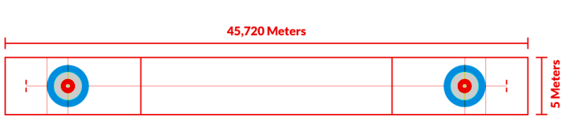
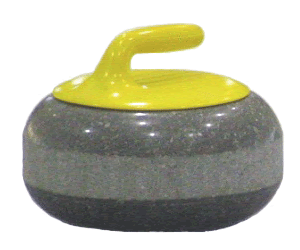

En una partida de curling se enfrentan dos equipos con 5 jugadores cada uno de ellos (4 jugadores y 1 reserva).
La dimensión de la pista de hielo es de 45,7 metros de largo y 5 metros de ancho. La casa está ubicada en ambos extremos, de esta manera no es necesario llevar las piedras al final de una ronda.
La casa se asimila a una diana, donde los anillos de colores indican cuán cerca está la piedra del centro de la casa. Tiene 3,66 metros de diámetro.
En la zona verde o Tee guard zone se pueden colocar piedras que se utilizan como guardias. Estos guardias no pueden ser expulsados hasta el quinto lanzamiento.
Una piedra de curling pesa 20 kg y tiene 90 cm de circunferencia. Está fundida en granito pulido y el fondo es hueco y plano para que se deslice con facilidad sobre el hielo. En la parte superior, tiene un asa de plástico del color del equipo para que se pueda ver fácilmente qué piedras pertenecen a qué equipo.
La palabra "curl", que ha dado el nombre al deporte, es un término para la rotación que se le da a la piedra cuando se lanza. La rotación puede girar a la izquierda (hacia afuera) o a la derecha (en mano) en su movimiento de rotación, si eres diestro, y opuesto si eres zurdo.
Los compañeros de equipo del jugador que coloca la piedra tienen la tarea de barrer frente a la piedra. Esto sirve para aumentar o disminuir la velocidad de la piedra mientras se desliza por el hielo, y puede influir determinantemente tanto en su direccionamiento como en su posición final. El hielo se derrite cuando se calienta por el roce de la escoba que barre la superficie ayudando a la piedra a deslizarse. Actualmente las escobas están compuestas por un tubo de fibra de carbono hueco con tres terminaciones distintas.
Se puede barrer en la dirección que se desee, siempre y cuando la escoba no toque la piedra. Si esto sucediera, la piedra debe retirarse del juego antes de que llegue a la casa. Si no se retira del juego, la oposición debe decidir si continuar jugando con las piedras en sus nuevas posiciones o si devolverlas a su posición anterior.